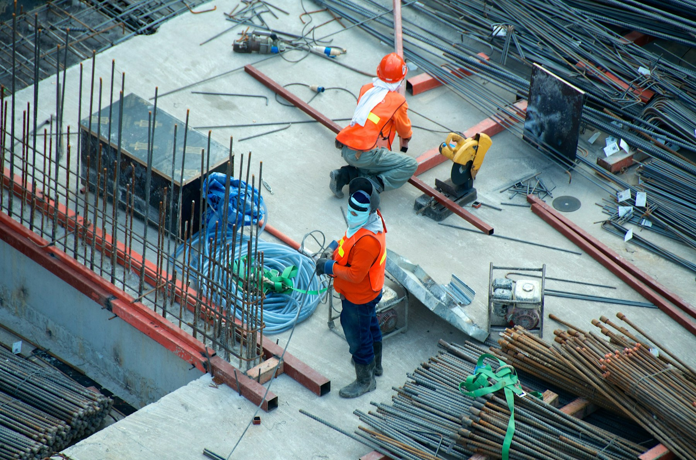

Habitat Vivant
Réhabiliter les logements vacants ou dégradés pour les remettre en vie.
TERRITOIRES VIVANTS FRANCE agit pour la revitalisation des territoires en transformant les bâtiments vacants, les matériaux inutilisés et les espaces abandonnés en opportunités pour les habitants.
TVF repère les logements vacants, commerces fermés, friches, bâtiments inutilisés et matériaux encore utiles.
TVF qualifie chaque situation avant d'agir : propriété, état, besoins du territoire, risques, faisabilité et usage possible.
TVF mobilise habitants, propriétaires, collectivités, entreprises, associations, bénévoles et financeurs autour de projets utiles.
TVF oriente les ressources vers la réhabilitation, le réemploi, l'insertion, les usages partagés et la revitalisation de proximité.
TVF mesure uniquement les résultats prouvés : aucun chiffre d'impact, partenaire ou projet réalisé n'est affiché sans validation.
Réhabiliter les logements vacants ou dégradés pour les remettre en vie.

Collecter et redistribuer les matériaux réemployables pour éviter le gaspillage.

Remettre en activité les locaux commerciaux inoccupés et soutenir les entrepreneurs.

Transformer les espaces abandonnés en lieux utiles, verts et accueillants.

Créer de l'insertion, former et accompagner les publics en difficulté.


TERRITOIRES VIVANTS FRANCE est une association nationale basée à Saint-Étienne.
Son objectif est de créer un réseau d'antennes locales en métropole et en Outre-mer afin de redonner vie aux bâtiments, matériaux et espaces abandonnés.
M. Edryan Rangoly
M. Jordan Lambeau

Territoires Vivants France se construit comme une association nationale de terrain. Son rôle n'est pas d'annoncer des résultats avant qu'ils existent, mais d'organiser une méthode fiable pour transformer des ressources inutilisées en projets utiles.
Identifier les logements vacants, commerces fermés, friches, bâtiments et matériaux disponibles.
Vérifier la situation, les contraintes juridiques, techniques, sociales et la faisabilité d'une action.
Rassembler habitants, propriétaires, collectivités, entreprises, associations et compétences locales.
Construire des conventions, rechercher les moyens, orienter les matériaux et suivre les projets validés.
Retrouver des lieux utiles : logements, activités de proximité, espaces partagés, services et projets associatifs.
Disposer d'un cadre pour repérer les ressources inexploitées, prioriser les besoins et préparer des coopérations territoriales.
Étudier des solutions lorsqu'un bien vacant, dégradé ou inutilisé manque de moyens pour retrouver une fonction.
Valoriser des matériaux, des compétences ou du mécénat dans une logique de responsabilité territoriale.
Principe de confiance : TVF ne publie pas de faux chiffres d'impact, ne présente pas de partenaires non confirmés et distingue clairement les projets envisagés, les dispositifs en construction et les résultats vérifiés.
Voir notre méthodeAssociation en création : cette rubrique publiera uniquement des informations confirmées sur la structuration, les démarches et les prochaines étapes validées de TVF.
Territoires Vivants France a pour objet de contribuer à la revitalisation des territoires par le repérage, la qualification, la réhabilitation, le réemploi et la remise en usage de biens, d'espaces et de ressources inutilisés, notamment les logements vacants, commerces fermés, bâtiments abandonnés, friches, terrains délaissés et matériaux réemployables, au bénéfice des habitants, des collectivités, des associations et des acteurs locaux.